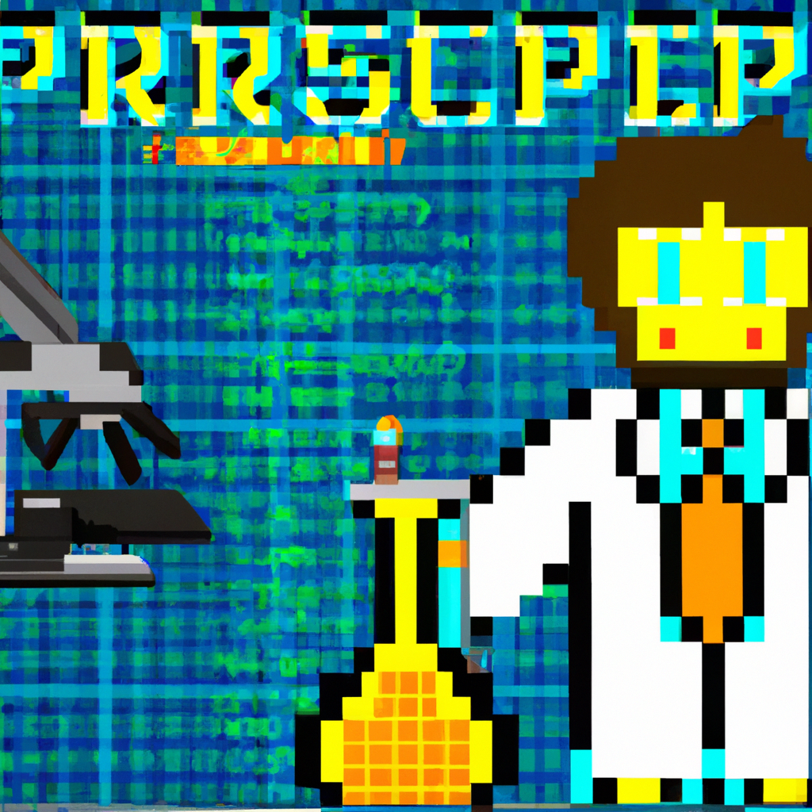

Entrepreneurship in biopharmaceuticals
Biopharmaceuticals are revolutionizing the way we think about health and medicine. In this blog post, I will discuss the opportunities that entrepreneurs have in the biopharmaceutical industry and how they can leverage technology to turn their ideas into successful products and services. I will explain how entrepreneurs can use tech such as Python and coding to create innovative solutions that can help improve patient outcomes and reduce healthcare costs. Finally, I will provide insight into the challenges and rewards of launching a biopharmaceutical startup.